Using BAI
BAI helps you understand your workload and become more aware of your worklife boundaries. It can support you in communicating and negotiating these boundaries with others, including how and when you are reachable. This guide takes you through the app step by step, from initial setup to everyday use: Controls, then Schedule, Status, Mood, and finally Insights.
Each step below has the screen you should be looking at. Follow it in order the first time; after that, dip into whichever section you need.
Before you start
The dashboard
This is what opens when you launch BAI, and where the tour begins and ends.
·What you are looking at
- The arc is your current status — here, Available.
- The chip under the title is your mode, Work or Life.
- The face, top right, is your last check-in. Tap it to update how you feel.
- The four tiles are the rest of the app.
- The card at the bottom reads your calendar: hours booked, how many events, and whether the day is balanced.
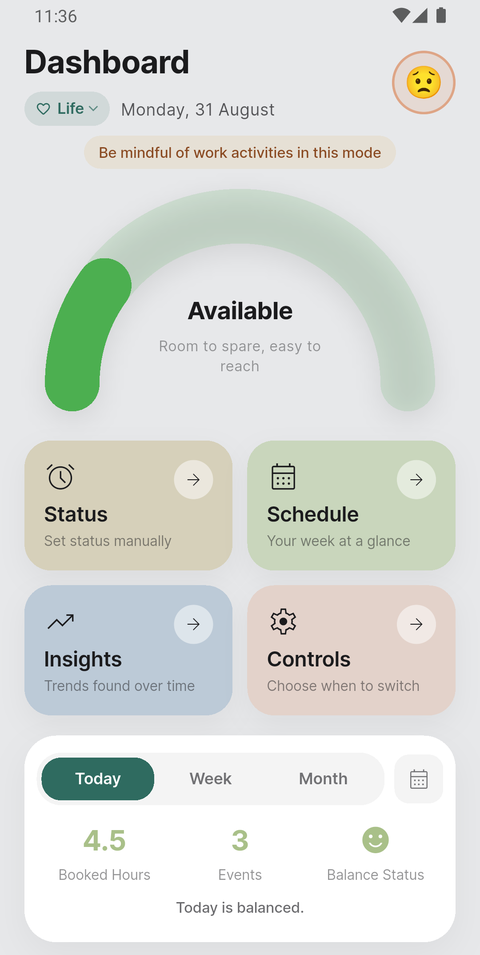
Step 1
Controls — tell BAI when you work
Start here. Controls is where you set the working pattern everything else is measured against, and choose what BAI is allowed to read.
1Turn the schedule on
From the dashboard, tap Controls. Switch Schedule on to let BAI move you between Work and Life mode by itself.
Tap the day letters to pick your working days — selected days are filled in. Weekends are off by default.
Turn the schedule off on holidays and days off. BAI then leaves your mode alone until you switch it back on.
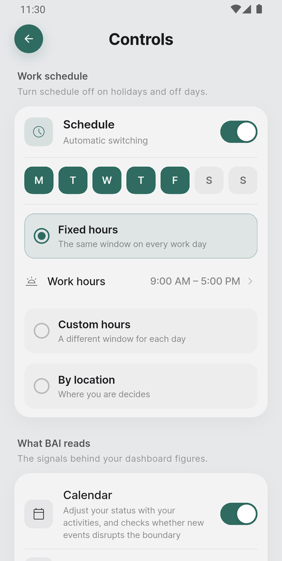
2Choose how your hours are decided
Three ways, and you pick one:
- Fixed hours — the same window every working day. Tap Work hours to set it.
- Custom hours — a different window for each day.
- By location — where you are decides. You pin a place that means Work and one that means Life.
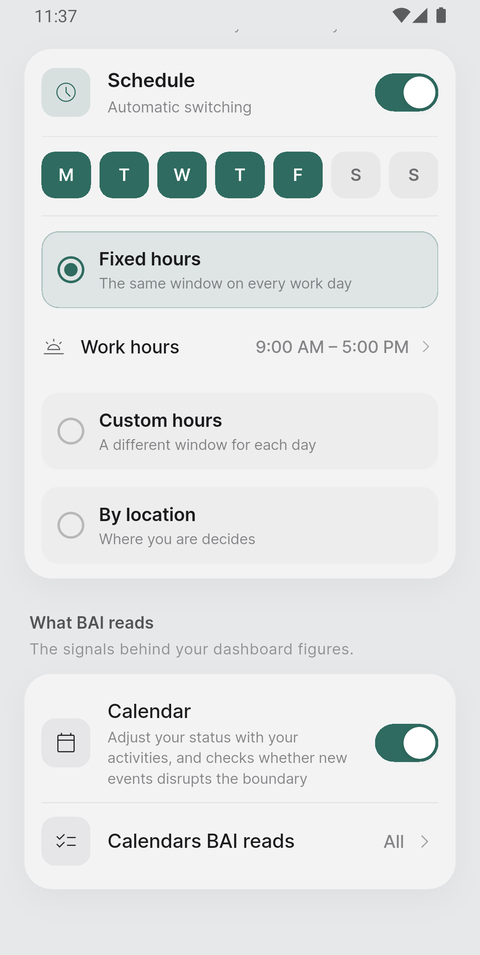
3Connect your calendar
Scroll to What BAI reads and switch Calendar on. Your phone will ask permission the first time.
BAI only ever reads your calendar. It never adds, edits or deletes anything.
4Choose which calendars count
Tap Calendars BAI reads. Every calendar on your phone is listed, grouped by the account it came from.
Switch off the ones that are somebody else's — a shared team calendar, a subscribed holiday feed — and their events stop filling your day.
This matters more than it looks. A shared calendar you cannot control will otherwise make every week read as full.
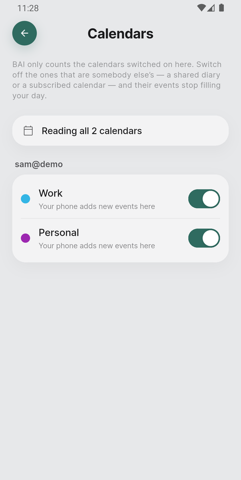
Step 2
Schedule — what your day actually holds
With a calendar connected, the Schedule screen turns your calendar into a single reading: how much of today is already spoken for.
1Read today's ring
Tap Schedule from the dashboard. The ring is the share of your day already booked, and the word beside it is the verdict — Wide open, Still open, Balanced, Filling up or Overloaded.
Underneath it: hours booked, and how many events that is.
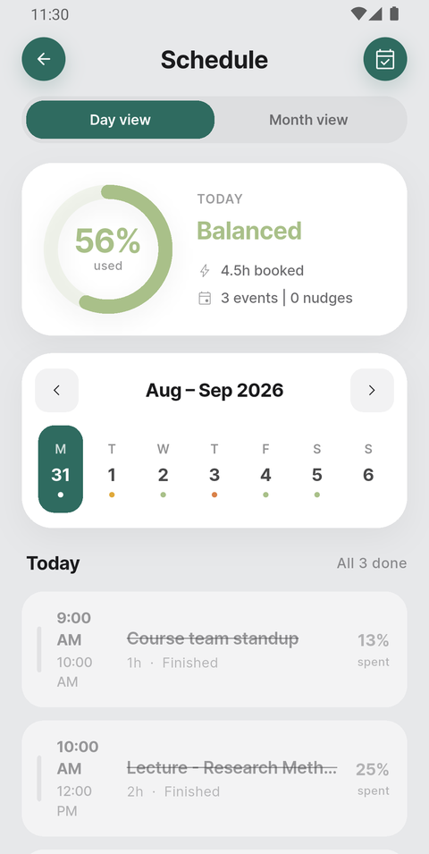
2Scan the week, then the day
The strip under the ring is your week. The coloured dot beneath each date is that day's verdict, so you can see a heavy Thursday coming before you agree to anything else. Tap any date to read it.
Below that, every event on the chosen day, with its share of your capacity. Finished ones are struck through.
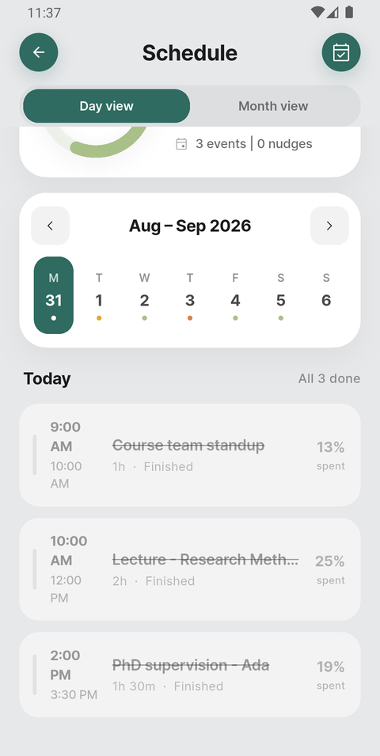
3Step back to the month
Tap Month view for the whole month at once, each day tinted by how full it is. The key at the bottom explains the colours.
Useful when someone asks for a date three weeks out and you want to know what that week already looks like.
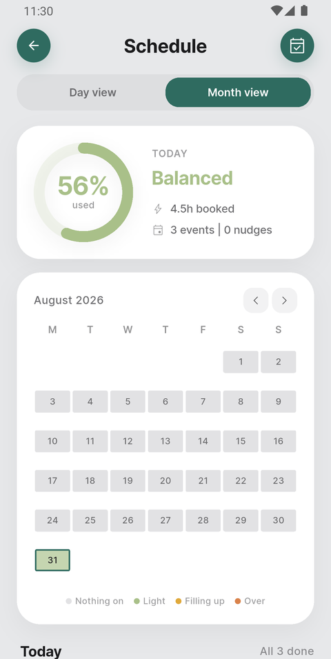
4Check a date before you say yes
The calendar button in the top-right corner answers a different question from the rest of the screen: not "how is today going?" but "am I free then?"
Tap it and pick a date. Tap a second date to make it a range — a conference week, a fortnight you are thinking of taking on. Tapping again starts over, so there is nothing to undo. Then tap See availability.
BAI answers in a sentence — You're open, There is room, You're nearly full, You're full, or Some days are full when the average looks fine but individual days do not — with the figures underneath it.
This is the one to reach for when somebody asks you to commit to a date, which is exactly when the diary is hardest to hold in your head.
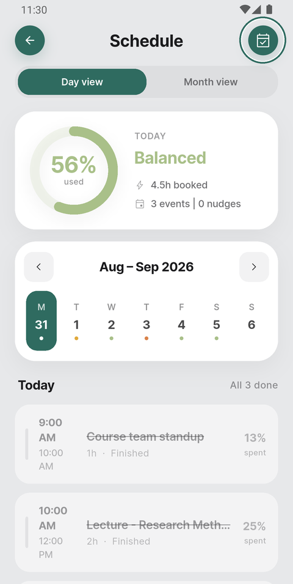
Step 3
Status — how reachable you are
Your current status is the boundary negotiation practice you must follow in the moment/time/period. Tap on the arc to see more details. Most of the time the schedule sets it for you; but you can also control this manually or via your mood.
1Set it yourself
Tap Status on the dashboard and choose one of five:
- Available — room to spare, easy to reach.
- Busy — engaged, but reachable if it matters.
- Heads-down — fully committed, limit interruptions.
- Stretched — carrying more than comfortably fits.
- Unavailable — switched off, be unreachable.
Tap Continue to confirm.
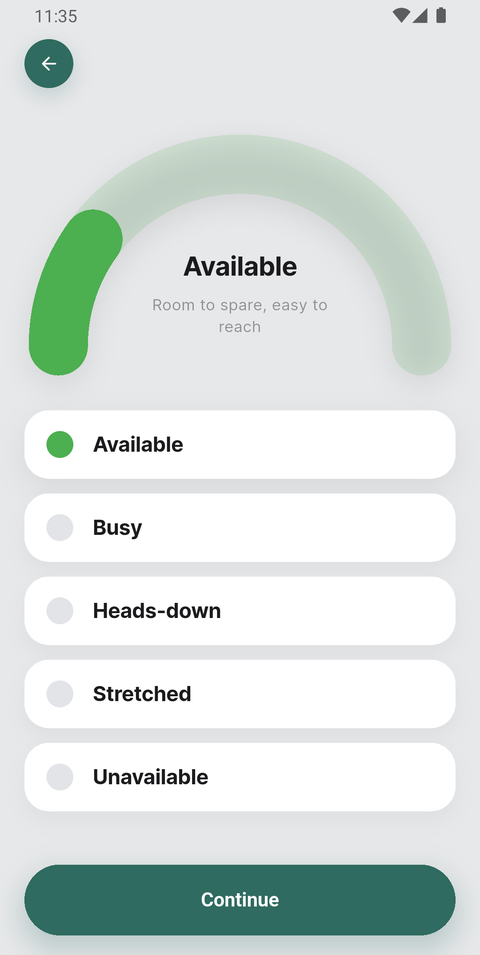
Step 4
Mood — how do you feel?
Status is what your calendar says. Mood is what you say. The gap between the two is what the study is looking at, so this is the one thing worth doing daily.
1Check in
Tap the face in the top-right corner of the dashboard. Pick the point on the scale that fits, from Energized at the top to Burned out at the bottom, then tap Set Mood.
The line under the scale describes whichever one you have picked, so you can check it means what you think.
2Add a word of your own
If none of the ten fits, tap Add your own at the foot of the scale. Name it, write one short line describing it, and place it on the scale — 1 is your most available, 10 your least. It joins the list and stays there.
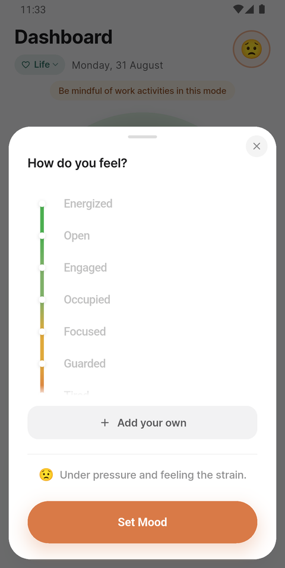
Step 5
Insights — what the weeks add up to
Insights is the only screen that looks backwards. It needs a few days of use before it says anything; until then it tells you so rather than guessing.
1Your week at a glance
Tap Insights from the dashboard. The first panel is a bar a day: taller means more guarded. The dots along it are your mood check-ins, so you can see the two move together — or not.
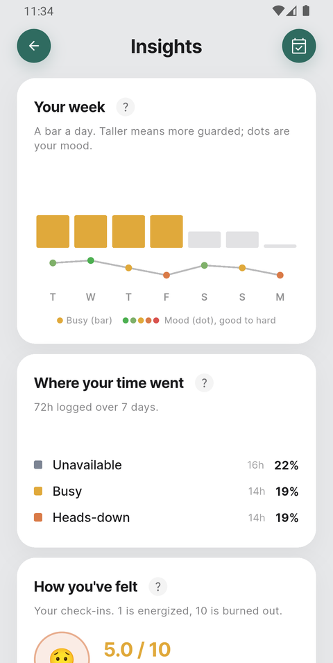
2Where your time went, and how you felt
Where your time went splits your logged hours by status, so you can see how much of the week you spent holding people off.
How you've felt averages your check-ins, and splits them by mode — here, Life is reading heavier than Work, which is exactly the kind of thing worth noticing.
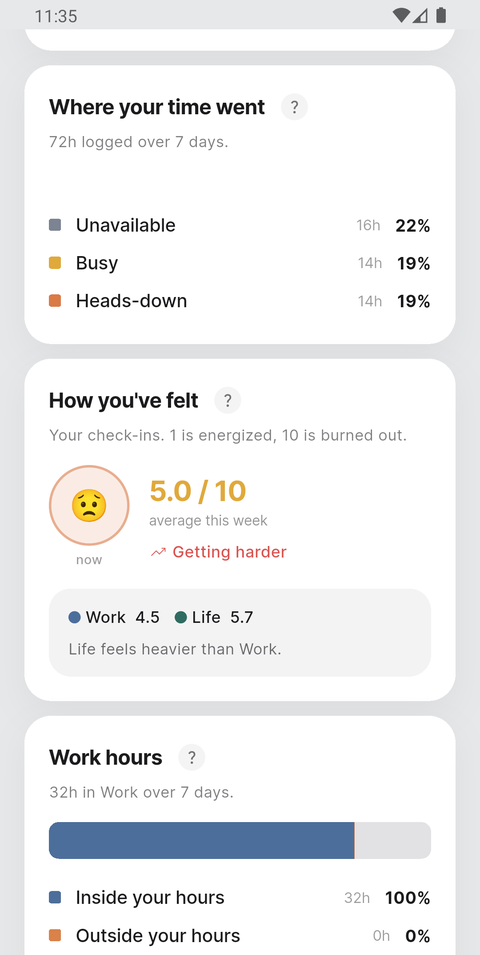
3Work hours, kept or crossed
Work hours compares the time you actually spent in Work mode against the hours you told BAI you work — and how much of it landed outside them.
This is the boundary, measured. Hours outside your own window are the number to watch.
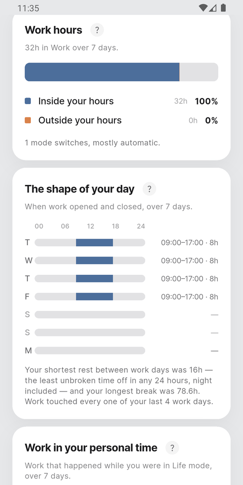
4The shape of your day
A bar per day showing when work opened and closed. Underneath it, your shortest rest between working days and your longest unbroken break.
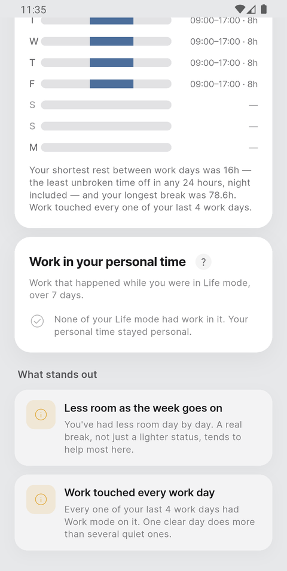
5What stands out
The last panel is written in sentences: patterns BAI has noticed across the period, such as work touching every working day, or less room as the week goes on.
These are observations, not instructions. They are there to be recognised or dismissed.

In short
What a normal day looks like
Once it is set up, BAI asks very little of you:
- Check in once a day — tap the face, pick how you feel.
- Glance at the dashboard before agreeing to something new.
- Correct your status when the automatic one is wrong.
- Look at Insights weekly, not daily. It is about patterns.